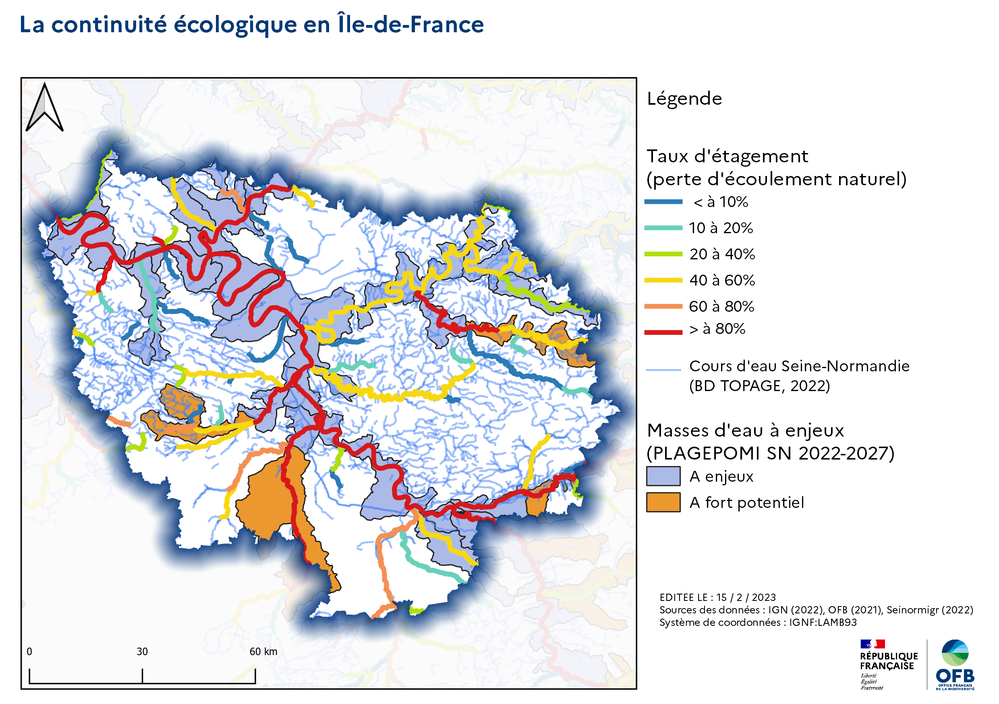

Diagnostic territorial Île-de-France
1
Les diagnostics territoriaux à l’OFB
2
La continuité écologique des cours d’eau
2.1
Etat des lieux
2.2
Pressions
2.3
Actions de l’OFB
References
Published with bookdown
Diagnostic territorial de la Direction régionale Île-de-France
Chapitre 2
La continuité écologique des cours d’eau
2.1
Etat des lieux

2.2
Pressions
2.3
Actions de l’OFB